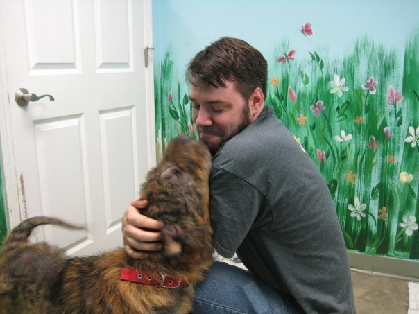

★Murphy★
Two months after buying our first house (with a fenced yard), my husband and I decided it was time to adopt a dog. So in June 2009, we went to the 5A's Shelter (Alton Area Animal Aid Association). After we met with a few dogs in the "get acquainted" room, Ryan asked me if I had seen the "gnarly" dog in the cage without a name tag. Ryan said that dog was calm - not jumping or barking - so he was interested in meeting him/her.
I inquired with a staff member about the dog without a name tag and she seemed confused that we wanted to meet him.
"That's Murphy. You want to see him?"
"Umm....yes....Is he available for adoption?"
"Yeah, he is...you want to see him?
She went on to explain that Murphy had been neglected by his previous owners. He had a skin infection, which caused a lot of his hair to fall out. I told her that we'd still like to meet him, so she brought him to us. As soon as Murphy walked into the room and Ryan knelt down to pet him, it was love at first sight. We'd found our dog.
We brought Murphy home that day and he's turned out to be an awesome dog. He's not very smart (it took a month to teach him how to sit), but he's friendly and sweet.